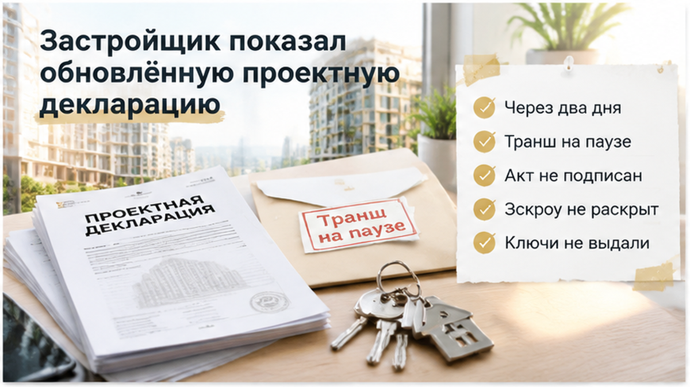

В Тюмени семья приехала за ключами и увидела вместо застеклённого балкона глухую стену — через два дня банк заморозил последний ипотечный транш. В приложении к ДДУ балкон был указан на плане квартиры: с контуром, площадью и местом на этаже. Застройщик показал свежую проектную декларацию и спокойно объяснил: «Сняли по проекту». Но квартиру покупали по подписанному договору, а не по документу, который появился позднее.
Разбираю такие ситуации в Telegram и MAX: новостройки Тюмени, приёмка квартир и изменения в ипотечных сделках — без лишнего шума и догадок.
Квартиру семья выбрала в новостройке и оформила по договору участия в долевом строительстве. В ипотечной схеме были первоначальный взнос и счёт эскроу: деньги должны были оставаться там до выполнения условий сделки.
Главная деталь находилась в приложении к ДДУ. На плане был застеклённый балкон — с контуром, площадью и местом на этаже. Для покупателя это не украшение презентации и не обещание менеджера, а часть описания объекта, который застройщик обязался передать. Поэтому при проверке важны подписанный план, расположение элемента, его контур и площадь: если балкон исчезает, вопрос может касаться не только вида из окна, но и цены квартиры.
За несколько недель до выдачи ключей застройщик сообщил об обновлении проектной декларации. Семья открыла актуальную информацию на наш.дом.рф и сопоставила её со своим договором, но не увидела объяснения, что именно изменилось в этой квартире и почему балкон из приложения к ДДУ должен исчезнуть.
Перед приёмкой представитель застройщика сослался на свежую проектную декларацию: балкон «сняли по проекту». В такой момент легко решить, что спор уже проигран, раз новый документ опубликован. Но проектная декларация сама по себе не переписывает подписанный ДДУ.
Застройщик размещает изменения проектной документации через ЕИСЖС на наш.дом.рф. Покупателю важно посмотреть не только последнюю версию, но и дату, содержание изменений, момент заключения своего договора и план конкретного объекта. Если после сделки звучит фраза «условия обновились», нужно отдельно выяснить, каким документом изменены обязательства именно перед этим дольщиком. Похожий спор о новом юридическом лице и новом ДДУ мы разбирали в материале о новом ДДУ и остановке сделки банком.
Семья не стала спорить по презентации. На приёмке она сравнила квартиру с приложением к договору: проверила наличие балкона, его контур, место и выход в эту зону. Расхождение перестало быть разговором о документах и стало видимым фактом.
В день приёмки семья пришла не с телефоном, где когда-то был открыт рендер, а с распечатанным приложением к ДДУ. На плане — контур балкона, его площадь и место на этаже. В квартире — глухая стена: без остекления и выхода на площадку.
Представитель застройщика расхождение не отрицал. Он открыл свежую проектную декларацию на наш.дом.рф и объяснил коротко: «Сняли по проекту».
Для покупателя это звучит убедительно ровно до того момента, пока рядом лежит подписанный ДДУ. Новая декларация может отражать изменения в проекте, но сама по себе не переписывает условия уже заключённого договора. Квартира должна соответствовать тому, что застройщик обязался передать конкретной семье.
Семья не стала спорить на эмоциях и не подписала акт «как есть». Расхождение внесли в акт осмотра, сделали фото и видео, сохранили переписку и копию плана. На записи видна не только стена, но и место, где по документам должен находиться балкон.
Это важная разница. Фраза «квартира не понравилась» оставляет простор для спора. А «в приложении к ДДУ указан застеклённый балкон, на приёмке вместо него глухая стена» — конкретное несоответствие, которое можно сопоставить с договором.
Рендер может обещать красивый фасад, а менеджер — говорить, что проект ещё уточняется. Но при приёмке смотрят на объект и подписанные документы.

Через два дня после приёмки банк приостановил последний ипотечный транш. Цепочка встала сразу в двух местах: застройщик не получил последний платёж, а семья — ключи.
Причина была не в том, что банк внезапно «передумал» выдавать ипотеку. Акт приёма-передачи не подписан, квартира не принята, между сторонами возник спор о соответствии объекта договору. Для кредитора это уже не формальность, а незавершённая передача.
Банк проверяет документы по своим правилам: подписан ли акт, выполнены ли условия договора, какие бумаги нужны для раскрытия эскроу и выдачи оставшейся суммы. Поэтому нельзя обещать, что он автоматически пересчитает кредит, изменит залоговую стоимость или возобновит транш после одной претензии.
Эскроу тоже не решает спор за покупателя. Деньги остаются на счёте до выполнения условий раскрытия, но расхождение с ДДУ всё равно нужно фиксировать. В другой истории из-за переноса ключей расчёты по эскроу также остановились — сам счёт не заменил документы, подтверждающие, что произошло.
Застройщик предложил подписать акт «как есть», а компенсацию обсудить позднее. Это кажется быстрым: получить ключи, а потом разбираться. Но после подписи спор о том, что именно было принято и в каком состоянии, становится тяжелее.
Семья сохранила документы и направила претензию: потребовала устранить нарушение либо рассмотреть соразмерное уменьшение цены. По статье 7 закона № 214-ФЗ при отступлении от договора возможны устранение недостатков, снижение цены или возмещение расходов.
Готовой суммы здесь нет. Коэффициенты приведённой площади — для лоджии 0,5, для балкона и террасы 0,3 — не превращают исчезнувший балкон в автоматический перерасчёт. Нужно смотреть конкретный ДДУ, его план, площадь и порядок определения цены.
Для банка это тоже не происходит само собой: пересчёт залоговой стоимости или возобновление транша зависят от кредитного договора и документов после урегулирования ситуации. Спор о планировке способен задержать и ключи, и последний платёж по ипотеке.
Письменная претензия ушла с двумя требованиями: устранить нарушение или рассмотреть соразмерное уменьшение цены. Статья 7 закона № 214-ФЗ допускает такие варианты, но готовой суммы здесь нет. Исчезновение балкона нельзя автоматически приравнять к обычной погрешности в отделке.
Для приведённой площади в ДДУ используют коэффициенты: для лоджии — 0,5, для балкона и террасы — 0,3. Какой расчёт применять к конкретной квартире и как он повлияет на цену, нужно смотреть по договору, приложению и формулировкам застройщика.
На финише сделки банк проверяет документы так же жёстко, как в ситуации, когда перед ДДУ подняли ипотечную ставку, или когда ипотеку одобрили, но эскроу не открыли. У семьи не было подписанного акта, у застройщика — последнего платежа, а у банка — документа о завершённой передаче объекта.
На уговор «Подпишите сейчас, разберёмся потом» лучше не соглашаться: после подписи спор становится тяжелее. Если акт всё-таки подписывают, замечания нужно внести подробно — указать пункт договора, описать расхождение и приложить фотографии, а не писать «есть вопросы к балкону».
Семья акт не подписала. Она сохранила ДДУ и приложение с планом, акт осмотра, фотографии, видео, переписку с застройщиком и сведения об обновлённой проектной декларации. Претензия оставила спор в проверяемой плоскости: что обещано договором, что построено и каким документом застройщик предлагает заменить прежнее условие.
Это не гарантирует автоматического восстановления балкона, возврата денег или немедленного возобновления ипотечного транша. Но документы не растворились в устном «мы всё исправим», а сделка не пошла дальше без фиксации проблемы.
Если балкон указан в приложении к ДДУ, но застройщик показывает новую декларацию, подписывать акт или требовать устранения нарушения по 214-ФЗ?
Проверять квартиру лучше до бронирования, а не в день выдачи ключей. Нужны документы именно по вашей квартире, корпусу и этажу. Новая публикация на наш.дом.рф помогает проверить историю проекта, но не подменяет подписанный ДДУ.
| Что проверить | Где смотреть | Какое расхождение важно | Что сохранить |
|---|---|---|---|
| Контур квартиры и балкона | Приложение к ДДУ, план объекта | Балкон или лоджия исчезли, изменились место, доступ или контур | Подписанную редакцию плана и номер приложения |
| Площадь и её расчёт | ДДУ, спецификация, расчёт цены | Изменилась общая или приведённая площадь, а порядок расчёта неясен | Страницы договора с площадью, коэффициентами и ценой |
| Проектная декларация | Наш.дом.рф, текущая и предыдущие редакции | В декларации появилась новая планировка после заключения ДДУ | Ссылку, дату публикации и копии нужных редакций |
| Описание объекта в рекламе | Сайт проекта, буклет, переписка | Рендер обещает балкон, но в ДДУ его нет | Материалы как дополнительный контекст, не вместо договора |
| Условия передачи | Раздел ДДУ об акте и приёмке | Непонятно, как фиксируются замечания и когда передаются ключи | Полный текст ДДУ и приложения до подписания |
Проектную декларацию стоит открыть до подписания договора и сопоставить её дату с датой заключения ДДУ. Если застройщик ссылается на новый план, попросите показать документ, который меняет именно ваш договор: свежая редакция декларации не означает, что покупатель согласился переписать уже подписанные условия.
На приёмку полезно взять экземпляр ДДУ с приложениями и заряженный телефон. Проверять нужно не только площадь комнат, но и наличие балкона или лоджии, их контур, дверь, доступ и расположение на этаже. При расхождении составьте акт осмотра, подробно опишите проблему и снимите фото и видео с датой, номером квартиры и местом, где должен был находиться балкон.
В 2026 году порядок передачи регулируется специальными правилами, включая ПП РФ № 2380 с изменениями. При споре о существенных недостатках может потребоваться осмотр со специалистом и оформление документов по установленной процедуре.
Ограничение в 3% цены ДДУ на отдельные отделочные недостатки нельзя механически переносить на исчезнувший балкон. Здесь вопрос не в царапине на полу, а в соответствии фактической квартиры плану и договору.
Эскроу не отменяет проверку: деньги на счёте не превращают отсутствующий элемент квартиры в исполненное обязательство и не освобождают покупателя от фиксации расхождения до подписи.
Если вы покупаете новостройку в Тюмени, такие документы лучше разобрать до денег, а не в коридоре у квартиры. Я показываю в Telegram и MAX, где в ДДУ искать план, площадь и условия передачи.
Семья остановилась на приёмке, сохранила документы и направила претензию. Это не обещание счастливой развязки, а нормальная точка контроля: договорный план, фактическое состояние квартиры, история декларации и последствия для банка собраны в одну папку.
До брони стоит сверить план в приложении к ДДУ, до денег — понять, что входит в цену, а до ключей — проверить историю изменений на наш.дом.рф. Если квартира не совпала с договором, сначала фиксируют расхождение, а уже потом решают вопрос с актом и траншем.